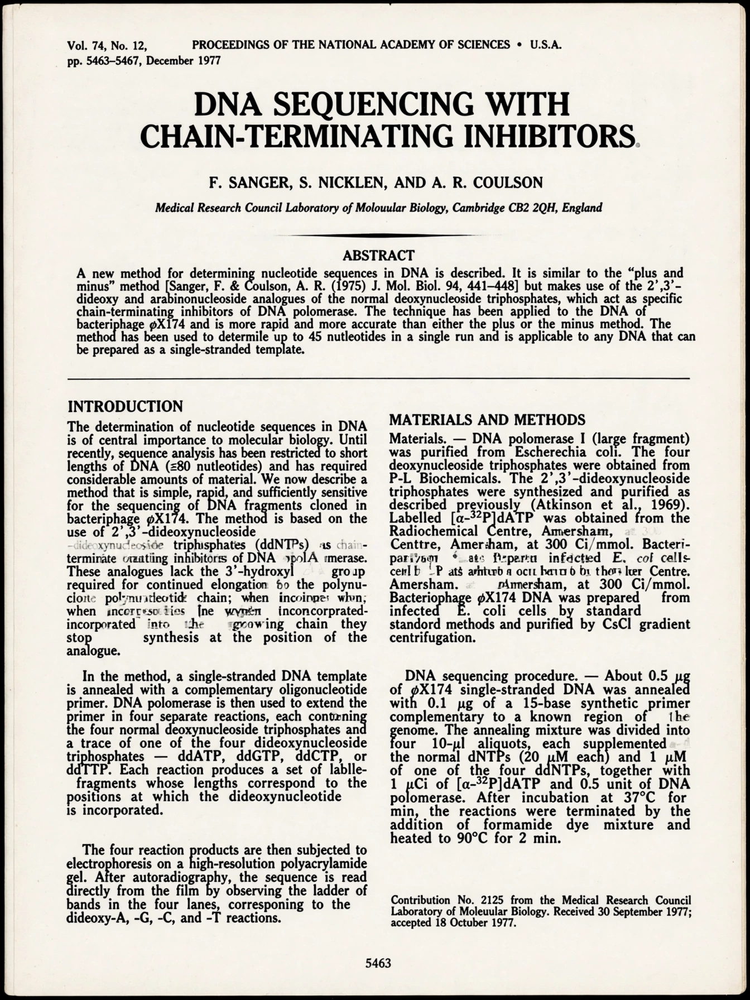

| Title | DNA Sequencing with Chain-Terminating Inhibitors |
|---|---|
| Author(s) | Frederick Sanger, Steve Nicklen, Alan R. Coulson |
| Journal | Proceedings of the National Academy of Sciences 74 (12): 5463–5467 |
| Year | 1977 |
| DOI | 10.1073/pnas.74.12.5463 |

The Sanger sequencing paper: dideoxy chain-terminating nucleotides let a polymerase reaction generate every possible fragment length, read as a ladder on a gel to spell out DNA sequence directly. The method sequenced the first genomes and, automated, powered the Human Genome Project; it earned Sanger a share of his second Nobel Prize.
↓ download PDF (0.6 Mb)
This download is a local placeholder in the crawl reconstruction; no paper file is served. Citation and bibliographic data are as remembered.
On Wikipedia: DNA sequencing · Frederick Sanger